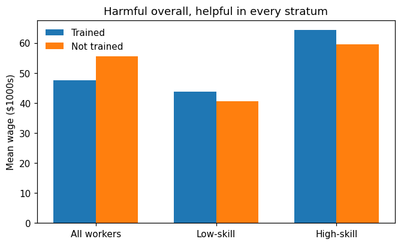
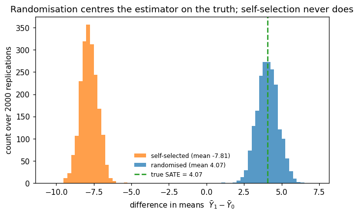
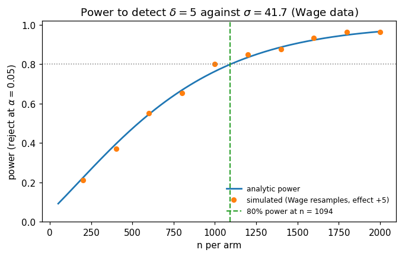
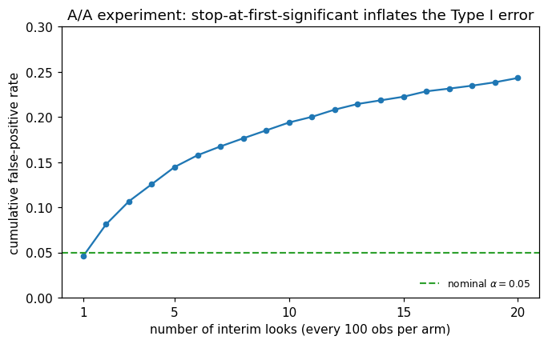

This notebook runs on Colab as-is. The badge link above and the GITHUB_RAW line in the setup cell already point to this repository, so everything installs and loads automatically.
Advanced Module A1 — Randomised Controlled Trials¶
Lab: potential outcomes, selection bias, randomisation, regression adjustment, power, peeking¶
Course: Quantitative Research Methods Instructor: Prof. Dr. Christoph Weisser Source: James, Witten, Hastie, Tibshirani & Taylor (2023), An Introduction to Statistical Learning, with Applications in Python, Springer. Companion code at statlearning.com. This advanced module extends the book with the Neyman–Rubin causal framework.
Goal. Simulate a confounded observational study and watch selection bias flip the sign of a real effect; decompose the naive comparison term by term; verify that randomisation centres the estimator on the truth; adjust a semi-synthetic experiment on the Wage data with HC2 errors; plan sample sizes with an analytic power formula checked by simulation; and quantify what peeking does to the Type I error.
Setup¶
Run this cell once. The ISLP package can be installed with pip install ISLP. As an alternative, the same data sets are available as CSVs in the workspace’s ALL CSV FILES - 2nd Edition folder.
Google Colab: this notebook also runs on Colab out of the box — the setup cell below installs any missing packages and downloads the data automatically.
# --- Setup: runs locally AND on Google Colab --------------------------------
# Silence only the spurious 'encountered in matmul' RuntimeWarnings that the macOS
# Accelerate BLAS emits; real warnings (deprecations, model caveats) stay visible.
import warnings
warnings.filterwarnings('ignore', message='.*encountered in matmul', category=RuntimeWarning)
import importlib.util, os, subprocess, sys
IN_COLAB = 'google.colab' in sys.modules
def _ensure(pkg, import_name=None):
"""pip-install pkg (quietly) if its import is missing."""
if importlib.util.find_spec(import_name or pkg) is None:
subprocess.run([sys.executable, '-m', 'pip', 'install', '-q', pkg], check=False)
if IN_COLAB: # Colab ships numpy/pandas/sklearn/statsmodels; add course extras
for _pkg, _imp in [('ISLP', 'ISLP')]:
_ensure(_pkg, _imp)
import numpy as np
import pandas as pd
import matplotlib.pyplot as plt
rng = np.random.default_rng(2024)
plt.rcParams['figure.dpi'] = 110
try:
from ISLP import load_data
HAVE_ISLP = True
except ImportError:
HAVE_ISLP = False
print('ISLP not installed; using CSV / URL fallbacks.')
# Local CSV location (repo layout first, then legacy paths, then a data/ cache).
_CANDIDATES = ['../ALL CSV FILES - 2nd Edition',
'ALL CSV FILES - 2nd Edition',
'../../ALL CSV FILES - 2nd Edition',
'../../../ALL CSV FILES - 2nd Edition', 'data']
CSV = next((p for p in _CANDIDATES if os.path.isdir(p)), 'data')
# GITHUB_RAW lets a fresh Colab runtime fetch any
# CSV that is neither in ISLP nor already local (spaces in the folder -> %20).
GITHUB_RAW = ('https://raw.githubusercontent.com/ChrisW09/Quantitative-Research-Methods/main/'
'ALL%20CSV%20FILES%20-%202nd%20Edition')
# The four datasets NOT in the ISLP package -> load from the book's official
# site so the notebook works on a fresh Colab even before the repo is published.
KNOWN_URLS = {
'Advertising': 'https://www.statlearning.com/s/Advertising.csv',
'Heart': 'https://www.statlearning.com/s/Heart.csv',
'Income1': 'https://www.statlearning.com/s/Income1.csv',
'Income2': 'https://www.statlearning.com/s/Income2.csv',
}
def load(name, **read_csv_kwargs):
"""Load a course dataset. Order: ISLP package -> R datasets -> local CSV
-> official book URL -> your GitHub repo. Works locally and on Colab."""
if HAVE_ISLP:
try:
return load_data(name)
except Exception:
pass
if name == 'USArrests': # classic R dataset, not in ISLP
try:
import statsmodels.api as sm
return sm.datasets.get_rdataset('USArrests', 'datasets').data
except Exception:
pass
path = f'{CSV}/{name}.csv'
if os.path.exists(path): # running from the repo (local)
return pd.read_csv(path, **read_csv_kwargs)
remotes = ([KNOWN_URLS[name]] if name in KNOWN_URLS else []) + [f'{GITHUB_RAW}/{name}.csv']
for url in remotes: # fresh Colab: stream over https
try:
return pd.read_csv(url, **read_csv_kwargs)
except Exception:
continue
raise FileNotFoundError(
f"Could not load {name!r}. Put the CSV in '{CSV}/' or check your connection for the GITHUB_RAW fallback.")
ISLP not installed; using CSV / URL fallbacks.
1. A confounded training programme¶
The deck’s running example: \(1000\) workers, an optional training programme whose true built-in effect is \(+4.1\) on average — and a dashboard comparison that says the opposite. Low-skill workers enrol with probability \(0.8\), high-skill workers with probability \(0.2\), and skill drives wages (\(+20\) for high skill), so who takes training is anything but random.
# The simulated population — same seed and draw order as the slides (rng(2024)).
rng = np.random.default_rng(2024)
n = 1000
high = rng.random(n) < 0.5 # skill stratum
p_take = np.where(high, 0.2, 0.8) # self-selection propensities
D = rng.random(n) < p_take # who actually enrols
y0 = 40 + 20*high + rng.normal(0, 5, n) # potential outcome untreated
tau = 4 + rng.normal(0, 2, n) # heterogeneous effects, mean 4
y1 = y0 + tau # potential outcome treated
y = np.where(D, y1, y0) # what the dashboard sees
print(f'trained n={D.sum()}, mean wage {y[D].mean():.1f}')
print(f'untrained n={(~D).sum()}, mean wage {y[~D].mean():.1f}')
print(f'naive difference: {y[D].mean() - y[~D].mean():+.2f} (true ATE: {tau.mean():+.2f})')
trained n=491, mean wage 47.5
untrained n=509, mean wage 55.6
naive difference: -8.07 (true ATE: +4.07)
Reading the output. The naive difference says training “costs” \(8{,}100\) dollars; the truth built into the simulation is a gain of \(4{,}070\). The comparison is computed correctly — the causal reading is wrong, because the trained and untrained groups differed before treatment did anything.
# The sign flips inside every stratum (Simpson's paradox).
for label, mask in [('low-skill ', ~high), ('high-skill', high)]:
d = y[D & mask].mean() - y[~D & mask].mean()
print(f'{label}: trained {int((D & mask).sum()):>3} vs {int((~D & mask).sum()):>3},'
f' within-stratum diff {d:+.1f}')
fig, ax = plt.subplots(figsize=(7, 4))
labels = ['All workers', 'Low-skill', 'High-skill']
masks = [np.ones(n, bool), ~high, high]
x = np.arange(3); w = 0.35
for j, m in enumerate(masks):
ax.bar(x[j]-w/2, y[D & m].mean(), w, color='C0', label='Trained' if j == 0 else None)
ax.bar(x[j]+w/2, y[~D & m].mean(), w, color='C1', label='Not trained' if j == 0 else None)
ax.set(xticks=x, xticklabels=labels, ylabel='Mean wage ($1000s)',
title='Harmful overall, helpful in every stratum')
ax.legend(frameon=False)
plt.show()
low-skill : trained 404 vs 107, within-stratum diff +3.3
high-skill: trained 87 vs 402, within-stratum diff +4.8

How to read the bars. Overall the trained earn \(-8.1\) less; within each skill stratum they earn more (\(+3.3\) low-skill, \(+4.8\) high-skill). The aggregate flips sign because \(82\%\) of the trained are low-skill against only \(21\%\) of the untrained — Simpson’s paradox, driven by confounding.
2. Potential outcomes and selection bias¶
Because this is a simulation we hold the God’s-eye view: both potential outcomes for everyone. That lets us compute every term of the deck’s decomposition
# Every term, computed from the God's-eye view (only a simulation allows this).
naive = y[D].mean() - y[~D].mean()
ATE = tau.mean()
ATT = tau[D].mean()
ATU = tau[~D].mean()
sel = y0[D].mean() - y0[~D].mean() # baseline difference
pi = D.mean()
diff_term = (1 - pi) * (ATT - ATU)
print(f'naive {naive:+.2f}')
print(f'ATE {ATE:+.2f}')
print(f'ATT {ATT:+.2f} ATU {ATU:+.2f}')
print(f'selection bias {sel:+.2f}')
print(f'diff. effect {diff_term:+.2f}')
print(f'check: ATE + sel + diff = {ATE + sel + diff_term:+.2f} (equals the naive difference)')
naive -8.07
ATE +4.07
ATT +3.97 ATU +4.17
selection bias -12.04
diff. effect -0.10
check: ATE + sel + diff = -8.07 (equals the naive difference)
Reading the output. The naive \(-8.07\) decomposes exactly: a true effect of \(+4.07\), buried under \(-12.04\) of selection bias (the trained would have earned far less anyway) and a small \(-0.10\) differential-effect term. No amount of data shrinks either bias term — only design does.
3. Randomisation in action¶
Same population, two assignment mechanisms, \(2000\) replications each: a randomised \(500/500\) split against self-selected uptake. We also record how often the Neyman \(95\%\) CI \(\hat\tau \pm 1.96\,\widehat{\mathrm{SE}}\) covers the true SATE.
# Sampling distribution of the difference in means under both designs.
rng = np.random.default_rng(2024) # slide seed and draw order
high = rng.random(n) < 0.5
p_take = np.where(high, 0.2, 0.8)
_ = rng.random(n) < p_take # the observational draw of Section 1
y0 = 40 + 20*high + rng.normal(0, 5, n)
tau = 4 + rng.normal(0, 2, n)
y1 = y0 + tau
est_r, est_s, cover = [], [], 0
for _i in range(2000):
Dr = np.zeros(n, bool); Dr[rng.permutation(n)[:500]] = True # randomised
yr = np.where(Dr, y1, y0)
d = yr[Dr].mean() - yr[~Dr].mean(); est_r.append(d)
se = np.sqrt(yr[Dr].var(ddof=1)/500 + yr[~Dr].var(ddof=1)/500)
cover += abs(d - tau.mean()) <= 1.96*se # CI covers truth?
Ds = rng.random(n) < p_take # self-selected
ys = np.where(Ds, y1, y0)
est_s.append(ys[Ds].mean() - ys[~Ds].mean())
est_r, est_s = np.array(est_r), np.array(est_s)
print(f'randomised mean {est_r.mean():.2f} sd {est_r.std():.2f} CI coverage {cover/2000:.3f}')
print(f'self-selected mean {est_s.mean():.2f} sd {est_s.std():.2f} bias {est_s.mean()-tau.mean():+.2f}')
print(f'true SATE {tau.mean():.2f}')
randomised mean 4.07 sd 0.70 CI coverage 0.951
self-selected mean -7.81 sd 0.56 bias -11.88
true SATE 4.07
fig, ax = plt.subplots(figsize=(7, 4))
bins = np.arange(-10.5, 7.5, 0.25)
ax.hist(est_s, bins=bins, color='C1', alpha=0.75, label=f'self-selected (mean {est_s.mean():.2f})')
ax.hist(est_r, bins=bins, color='C0', alpha=0.75, label=f'randomised (mean {est_r.mean():.2f})')
ax.axvline(tau.mean(), color='C2', ls='--', lw=1.8, label=f'true SATE = {tau.mean():.2f}')
ax.set(xlabel=r'difference in means $\bar{Y}_1 - \bar{Y}_0$', ylabel='count over 2000 replications',
title='Randomisation centres the estimator on the truth; self-selection never does')
ax.legend(frameon=False, fontsize=8)
plt.show()

Reading the histograms. Randomised: centred exactly on the truth (\(4.07\)), sd \(0.70\), and the CI covers the truth in \(95.1\%\) of draws — the advertised guarantee, delivered. Self-selected: mean \(-7.81\), a structural bias of \(-11.9\) that repeating the study \(2000\) times does not touch. Note the orange histogram is narrower — precision is no defence against bias.
4. Regression adjustment on Wage¶
A semi-synthetic experiment on real course data: real covariates and wages from Wage (\(n = 3000\)), a randomised fake programme \(D\), and a true effect of \(+5\) built in by construction. Adjusting for pre-treatment covariates must not change what we estimate — only how precisely.
import statsmodels.formula.api as smf
Wage = load('Wage') # course data, n = 3000
rng = np.random.default_rng(2024) # lecture seed
Wage['D'] = (rng.random(len(Wage)) < 0.5).astype(int) # coin flip: 1475 vs 1525
Wage['y'] = Wage['wage'] + 5.0*Wage['D'] # truth by construction: tau = +5
m0 = smf.ols('y ~ D', data=Wage).fit(cov_type='HC2') # unadjusted
m1 = smf.ols('y ~ D + age + education', data=Wage).fit(cov_type='HC2') # adjusted
for name, m in [('unadjusted', m0), ('adjusted ', m1)]:
lo, hi = m.conf_int().loc['D']
print(f'{name} tau_hat {m.params["D"]:.3f} SE {m.bse["D"]:.3f} 95% CI [{lo:.2f}, {hi:.2f}]')
print(f'variance ratio (adj/unadj): {(m1.bse["D"]/m0.bse["D"])**2:.3f} R2 of adjusted model: {m1.rsquared:.2f}')
unadjusted tau_hat 4.122 SE 1.523 95% CI [1.14, 7.11]
adjusted tau_hat 3.732 SE 1.315 95% CI [1.15, 6.31]
variance ratio (adj/unadj): 0.746 R2 of adjusted model: 0.26
Reading the output. Unadjusted: \(\hat\tau = 4.122\) (SE \(1.523\)). Adjusted: \(\hat\tau = 3.732\) (SE \(1.315\)). Both within one SE of the built-in \(+5\); the estimates differ only through sampling noise. What changed systematically is the SE: the variance fell by \(25\%\), so the adjusted analysis of \(3000\) people is as precise as an unadjusted one of about \(4000\) — precision for free, fuelled by the \(R^2 \approx 0.26\) the covariates explain. HC2 errors are the natural default in an experiment: they reproduce the Neyman variance and drop the equal-variance assumption.
5. Power¶
Before launching an experiment: how large must each arm be to detect the effect we care about? The analytic two-arm formula
against a simulation that resamples the real Wage wages (\(\sigma = 41.7\)) and plants a \(\delta = +5\) effect.
from scipy import stats
sigma = Wage['wage'].std()
delta = 5.0
za = stats.norm.ppf(0.975)
n80 = 2*(za + stats.norm.ppf(0.80))**2 * sigma**2 / delta**2
print(f'sigma = {sigma:.1f}; 80% power needs n = {np.ceil(n80):.0f} per arm')
# Simulated power at n = 500: 1000 fake experiments on resampled Wage data.
rng = np.random.default_rng(2024)
w = Wage['wage'].values
rej = 0
for _i in range(1000):
yc = rng.choice(w, 500)
yt = rng.choice(w, 500) + delta
se = np.sqrt(yt.var(ddof=1)/500 + yc.var(ddof=1)/500)
rej += abs((yt.mean() - yc.mean())/se) > za
analytic500 = (stats.norm.cdf(delta/(sigma*np.sqrt(2/500)) - za)
+ stats.norm.cdf(-delta/(sigma*np.sqrt(2/500)) - za))
print(f'power at n=500: simulated {rej/1000:.3f} analytic {analytic500:.3f}')
sigma = 41.7; 80% power needs n = 1094 per arm
power at n=500: simulated 0.477 analytic 0.474
# The full curve: analytic line, simulated dots.
ns = np.arange(50, 2001, 10)
analytic = (stats.norm.cdf(delta/(sigma*np.sqrt(2/ns)) - za)
+ stats.norm.cdf(-delta/(sigma*np.sqrt(2/ns)) - za))
rng = np.random.default_rng(2024)
n_dots = np.arange(200, 2001, 200)
sim = []
for npa in n_dots:
r = 0
for _i in range(400): # 400 draws per dot keeps this quick
yc = rng.choice(w, npa); yt = rng.choice(w, npa) + delta
se = np.sqrt(yt.var(ddof=1)/npa + yc.var(ddof=1)/npa)
r += abs((yt.mean() - yc.mean())/se) > za
sim.append(r/400)
fig, ax = plt.subplots(figsize=(7, 4))
ax.plot(ns, analytic, color='C0', lw=1.8, label='analytic power')
ax.plot(n_dots, sim, 'o', color='C1', ms=5, label='simulated (Wage resamples, effect +5)')
ax.axhline(0.80, color='grey', lw=1, ls=':')
ax.axvline(n80, color='C2', ls='--', lw=1.4, label=f'80% power at n = {np.ceil(n80):.0f}')
ax.set(xlabel='n per arm', ylabel=r'power (reject at $\alpha=0.05$)', ylim=(0, 1.02),
title=r'Power to detect $\delta = 5$ against $\sigma = 41.7$ (Wage data)')
ax.legend(frameon=False, fontsize=8, loc='lower right')
plt.show()

Reading the curve. Formula and simulation agree everywhere: at \(n=500\) the simulation says \(0.477\) against the formula’s \(0.474\) — a slightly bent coin. Detecting \(\delta = 5\) against \(\sigma = 41.7\) with \(80\%\) power needs \(1094\) per arm, and \(n \propto 1/\delta^2\): halving the effect you must detect roughly quadruples the sample.
6. Peeking¶
An A/A test — both arms identical, no true effect — checked after every \(100\) users per arm and stopped at the first significant result. Each look is another hypothesis test on overlapping data: multiple testing in the time dimension (Chapter 13’s problem, wearing a lab coat). Change step or looks and watch the error rate move.
# Stop-at-first-significance inflates the Type I error (4000 A/A experiments).
rng = np.random.default_rng(2024)
reps, looks, step = 4000, 20, 100
rej_at = np.zeros(looks)
for _i in range(reps):
a = rng.normal(0, 1, looks*step) # arm A (no effect anywhere)
b = rng.normal(0, 1, looks*step) # arm B
for k in range(1, looks + 1):
na = k*step
z = (a[:na].mean() - b[:na].mean()) / np.sqrt(2/na)
if abs(z) > 1.96: # 'significant' at this look -> stop
rej_at[k - 1] += 1
break
cum = np.cumsum(rej_at)/reps
for k in (1, 5, 10, 20):
print(f'false-positive rate by look {k:>2}: {cum[k-1]:.3f}')
false-positive rate by look 1: 0.046
false-positive rate by look 5: 0.145
false-positive rate by look 10: 0.194
false-positive rate by look 20: 0.243
fig, ax = plt.subplots(figsize=(7, 4))
ks = np.arange(1, looks + 1)
ax.plot(ks, cum, '-o', color='C0', ms=4)
ax.axhline(0.05, color='C2', ls='--', lw=1.4, label=r'nominal $\alpha = 0.05$')
ax.set(xlabel='number of interim looks (every 100 obs per arm)',
ylabel='cumulative false-positive rate', ylim=(0, 0.30), xticks=[1, 5, 10, 15, 20],
title='A/A experiment: stop-at-first-significant inflates the Type I error')
ax.legend(frameon=False, fontsize=8, loc='lower right')
plt.show()

Reading the output. \(4.6\%\) after one look — the nominal level — but \(14.5\%\) by five looks, \(19.4\%\) by ten, \(24.3\%\) by twenty: five times \(\alpha\). The looks are correlated (overlapping data), so the rate stays below the independent-tests bound \(1 - 0.95^{20} = 64\%\), yet a quarter of ineffective changes would ship. Fix the horizon in advance, or pre-specify group-sequential boundaries.
Lecture exercises — worked Python solutions¶
These are the [Python]-tagged exercises from the lecture slides, solved step by step; run them cell by cell and compare with the slide solutions. Data loads through the load() helper defined in the Setup cell, so every cell works locally and on Colab.
Extended Exercise A1.1 — Randomisation vs selection in simulation [Python]¶
Task (from the slides). Build the training population with np.random.default_rng(2024): high \(\sim\) Bernoulli(\(0.5\)), enrolment probability \(0.8/0.2\) for low/high skill, \(Y(0) = 40 + 20\,\texttt{high} + \mathcal N(0,5^2)\), \(\tau = 4 + \mathcal N(0,2^2)\), \(n = 1000\). Then:
simulate \(2000\) replications of (a) self-selected uptake and (b) randomised \(500/500\) assignment;
report mean and sd of both estimator distributions, and the bias of (a);
under randomisation, compute the coverage of the \(95\%\) CI \(\hat\tau \pm 1.96\,\widehat{\mathrm{SE}}\);
in two sentences: what does randomisation fix, and what does it not fix?
# (1)-(3) ---------------------------------------------------------------
rng = np.random.default_rng(2024) # module seed
n = 1000
high = rng.random(n) < 0.5 # skill stratum
p_sel = np.where(high, 0.2, 0.8) # self-selection propensities
_ = rng.random(n) < p_sel # the observational draw
y0 = 40 + 20*high + rng.normal(0, 5, n) # potential outcome untreated
tau = 4 + rng.normal(0, 2, n) # heterogeneous ITEs, mean 4
y1 = y0 + tau # potential outcome treated
est_r, est_s, cover = [], [], 0
for _i in range(2000): # 2000 replications
Dr = np.zeros(n, bool); Dr[rng.permutation(n)[:500]] = True # randomised
yr = np.where(Dr, y1, y0)
d = yr[Dr].mean() - yr[~Dr].mean(); est_r.append(d)
se = np.sqrt(yr[Dr].var(ddof=1)/500 + yr[~Dr].var(ddof=1)/500)
cover += abs(d - tau.mean()) <= 1.96*se # CI covers truth?
Ds = rng.random(n) < p_sel # self-selected uptake
ys = np.where(Ds, y1, y0)
est_s.append(ys[Ds].mean() - ys[~Ds].mean())
est_r, est_s = np.array(est_r), np.array(est_s)
print(f'true SATE = {tau.mean():.2f}')
print(f'randomised mean {est_r.mean():.2f} sd {est_r.std():.2f} coverage {cover/2000:.3f}')
print(f'self-selected mean {est_s.mean():.2f} sd {est_s.std():.2f} bias {est_s.mean()-tau.mean():.2f}')
# Expected: randomised mean 4.07 sd 0.70 coverage 0.951 ; self-selected mean -7.81 sd 0.56 bias -11.88
true SATE = 4.07
randomised mean 4.07 sd 0.70 coverage 0.951
self-selected mean -7.81 sd 0.56 bias -11.88
(4) Interpretation. Randomisation removes bias — both decomposition terms are zero in expectation, and the Neyman CI covers the truth in \(95.1\%\) of draws. It does not remove variance: a single unlucky draw can still be off, which is what the SE and CI quantify; nor does it buy SUTVA or fix attrition and non-compliance. And note the trap the slides flag: the self-selected estimator is more stable (sd \(0.56\) vs \(0.70\)) — a tight interval around the wrong number is the most dangerous output in statistics.
Exercise A1.4 — Regression adjustment on the Wage experiment [Python]¶
Task (from the slides). Using Wage and the semi-synthetic experiment from the lecture (seed \(2024\), coin-flip \(D\), \(y = \texttt{wage} + 5D\)):
fit the unadjusted model
y ~ Dwith HC2 standard errors and report \(\hat\tau\) and its SE;add
ageandeducation; report the new \(\hat\tau\) and SE;compute the implied variance reduction and the equivalent sample-size gain;
a colleague proposes also adjusting for a satisfaction survey answered after the programme — why must you refuse?
# (1)-(2) ---------------------------------------------------------------
Wage = load('Wage') # n = 3000
rng = np.random.default_rng(2024) # lecture seed
Wage['D'] = (rng.random(len(Wage)) < 0.5).astype(int)
Wage['y'] = Wage['wage'] + 5.0*Wage['D'] # true effect +5
m0 = smf.ols('y ~ D', data=Wage).fit(cov_type='HC2')
m1 = smf.ols('y ~ D + age + education', data=Wage).fit(cov_type='HC2')
print(round(m0.params['D'], 3), round(m0.bse['D'], 3)) # Expected: 4.122 1.523
print(round(m1.params['D'], 3), round(m1.bse['D'], 3)) # Expected: 3.732 1.315
# (3) --------------------------------------------------------------------
ratio = (m1.bse['D']/m0.bse['D'])**2
print(f'variance ratio {ratio:.3f} -> variance down {(1-ratio)*100:.1f}%,'
f' equivalent sample gain x{1/ratio:.2f}')
4.122 1.523
3.732 1.315
variance ratio 0.746 -> variance down 25.4%, equivalent sample gain x1.34
(4) Interpretation. The survey is post-treatment: the programme may change satisfaction, so conditioning on it splits the sample by a consequence of \(D\) — a “bad control” that re-introduces exactly the selection bias randomisation eliminated. Only pre-treatment covariates are admissible. And resist reading \(\hat\tau\) moving from \(4.12\) to \(3.73\) as “finding a smaller effect”: both estimate the same \(\tau\); the systematic change is the SE, which is the whole point of adjusting.
7. Exercises¶
In Section 3, shrink the randomised arms from \(500/500\) to \(100/100\). How do the sd of the estimator and the CI coverage respond?
Re-run the peeking simulation of Section 6 with a look after every \(500\) users per arm (4 looks in total). How much of the inflation survives?
In Section 4, add
yearandjobclassto the adjustment set. Does the SE fall further? Compare the gain with whatage + educationbought.Using Section 5’s formula, how large must each arm be to detect \(\delta = 2\) (instead of \(5\)) with \(80\%\) power on the Wage population — and what does that say about “small but real” effects?